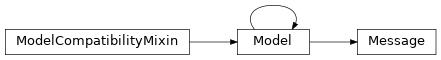
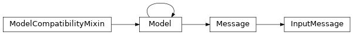
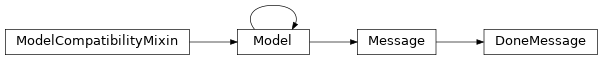
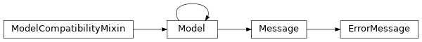
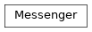

shepherd.comm¶
Package with sockets/greenlets communication helpers.
Classes¶
Message: Base zmq socket message.InputMessage: Message informing the runner about a job being ready to be processed.DoneMessage: Message informingshepherd.shepherd.Shepherdabout a finished job.ErrorMessage: Message informingshepherd.shepherd.Shepherdabout an encountered error.Messenger: Static helper class for sending and receiving messages through zmq sockets.
-
class
shepherd.comm.Message(raw_data=None, trusted_data=None, deserialize_mapping=None, init=True, partial=True, strict=True, validate=False, app_data=None, lazy=False, **kwargs)[source]¶ Bases:
schematics.deprecated.ModelBase zmq socket message.
-
identity= <StringType() instance on Message as 'identity'>¶ Optional identity (for zmq ROUTER sockets).
-
job_id= <StringType() instance on Message as 'job_id'>¶ shepherd job id.
-
-
class
shepherd.comm.InputMessage(raw_data=None, trusted_data=None, deserialize_mapping=None, init=True, partial=True, strict=True, validate=False, app_data=None, lazy=False, **kwargs)[source]¶ Bases:
shepherd.comm.messages.MessageMessage informing the runner about a job being ready to be processed.
-
io_data_root= <StringType() instance on InputMessage as 'io_data_root'>¶ Job data root (with
inputsandoutputsfolders).
-
-
class
shepherd.comm.DoneMessage(raw_data=None, trusted_data=None, deserialize_mapping=None, init=True, partial=True, strict=True, validate=False, app_data=None, lazy=False, **kwargs)[source]¶ Bases:
shepherd.comm.messages.MessageMessage informing
shepherd.shepherd.Shepherdabout a finished job.
-
class
shepherd.comm.ErrorMessage(raw_data=None, trusted_data=None, deserialize_mapping=None, init=True, partial=True, strict=True, validate=False, app_data=None, lazy=False, **kwargs)[source]¶ Bases:
shepherd.comm.messages.MessageMessage informing
shepherd.shepherd.Shepherdabout an encountered error.-
exception_traceback= <StringType() instance on ErrorMessage as 'exception_traceback'>¶ Exception traceback (where applicable).
-
exception_type= <StringType() instance on ErrorMessage as 'exception_type'>¶ Type of the error (e.g. ValueError).
-
message= <StringType() instance on ErrorMessage as 'message'>¶ Human-readable short error message.
-
-
class
shepherd.comm.Messenger[source]¶ Bases:
objectStatic helper class for sending and receiving messages through zmq sockets.
-
static
recv(socket, expected_message_types=None, noblock=False)[source]¶ Receive, decode and return a message from the given socket.
- Parameters
- Raises
MessengerError – if receiving fails
UnknownMessageTypeError – if the received message is of unknown type
UnexpectedMessageTypeError – if the received message type is not expected
- Return type
Union[InputMessage,DoneMessage,ErrorMessage]
-
static
send(socket, message, response_to=None)[source]¶ Encode given message and send it to the given socket.
- Parameters
socket (
Socket) – socket to send the message tomessage (
Message) – message to be sendresponse_to (
Optional[Message]) – optional message to respond to
- Raises
MessengerError – if it fails
UnknownMessageTypeError – if the message to be send is of unknown type
- Return type
None
-
static